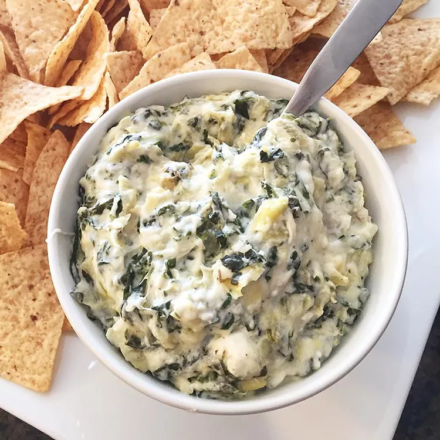

Home
Spinach Artichoke Dip

Spinach artichoke dip is the best (and most delicious) way to get any party started. This crowd-pleasing spinach artichoke dip recipe is sure to be a hit with your friends and family.
Ingredients
- Cream cheese: This satisfying spinach artichoke dip starts with a block of cream cheese.
- Mayonnaise: Mayonnaise lends creaminess and a welcome tangy flavor.
- Cheeses: You'll need grated Parmesan, grated Romano, and shredded mozzarella.
- Garlic: A clove of minced garlic takes the flavor up a notch.
- Spices and seasonings: The spinach artichoke dip is seasoned with dried basil, garlic salt, salt, and pepper.
- Artichoke hearts: Drain and chop one can of artichoke hearts.
- Spinach: Thawed and drained frozen spinach is perfect for this easy recipe.
Steps
- Mix all the ingredients (except for the mozzarella) together.
- Transfer the mixture to a prepared baking dish. Top with cheese.
- Bake the spinach artichoke dip in the preheated oven until bubbly.